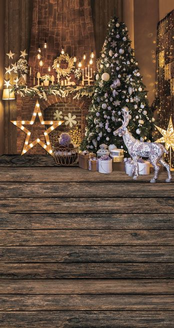

Galeria


Witaj, Drogi Użytkowniku!
Tekst kolędy... 1. Cicha noc, święta noc pokój niesie ludziom wszem. A u żłóbka Matka Święta czuwa sama uśmiechnięta nad Dzieciątka snem. x2 2. Cicha noc, święta noc. Pastuszkowie od swych trzód biegną wielce zadziwieni, za anielskich głosem pieni, gdzie się spełnił cud. x2 3. Cicha noc, święta noc. Narodzony Boży Syn – Pan wielkiego majestatu, niesie dziś całemu światu odkupienie win. x2 4. Cicha noc, święta noc, jakiż w tobie dzisiaj cud, w Betlejem Dziecina święta wznosi w górę swe rączęta, błogosławi lud. x2
Opisy i zasady gier...
Składniki: mąka, miód, przyprawy...
Kroki do wykonania:...
Dane kontaktowe do twórców strony...
Śledź nas na Facebooku!